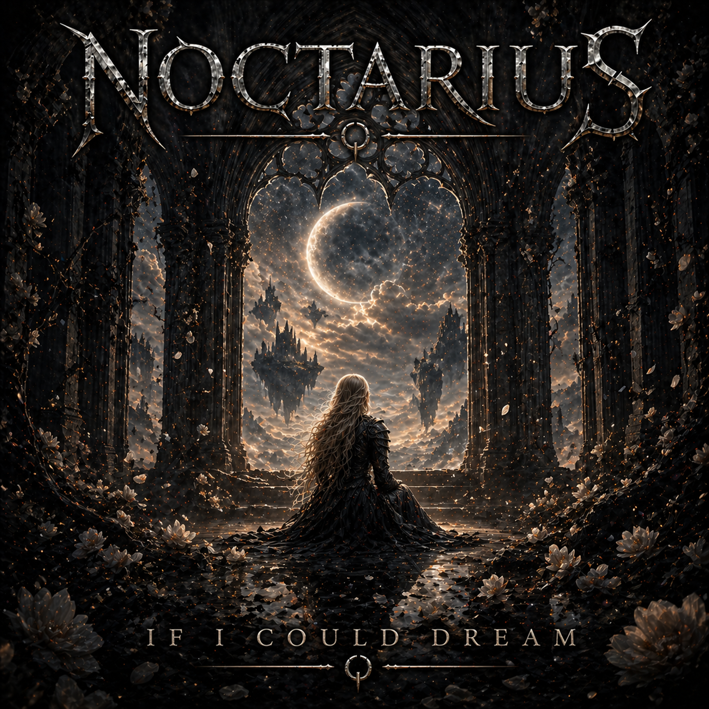

NOCTARIUS
If I Could Dream

A Symphony of Ashes
If I could dream beyond this night
Where shadows fade and hearts feel light
I’d paint a sky with fearless stars
And mend the cracks we hide as scars
I’ve been holding on to broken prayers
Whispered hopes in empty air
But somewhere deep, I still believe
There’s more to life than what I see
If I could dream, I’d dream of you
Of open roads and something true
No walls between what’s right and wrong
Just one clear voice, one honest song
If I could dream, I’d finally be
The person I was meant to be
I’ve walked through fire, I’ve learned to bend
Lost myself, found strength again
Every tear became a sign
That even pain can redefine
I don’t need a perfect world
Just a place where flags are furled
Where love is louder than our fear
And tomorrow feels sincere
If I could dream, I’d dream of you
Of second chances breaking through
No chains of doubt, no weight of blame
Just hearts that dare to feel the same
If I could dream, I’d finally see
Hope staring back at me
Maybe dreams are meant to hurt
Before they show what we’re worth
Maybe faith is just the act
Of standing tall when hope cracks
I’m not asking for the sky
Just a reason not to say goodbye
If I could dream, I’d dream out loud
No more lost inside the crowd
I’d let my voice refuse to bend
I’d choose love in the end
If I could dream, I’d make it real
Every word, every scar I feel
If I could dream…
I’d start tonight.